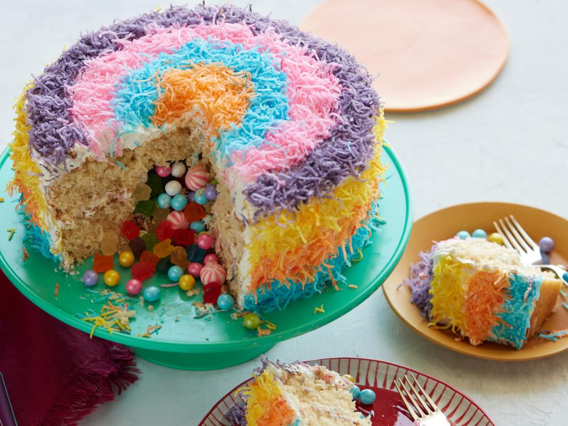

Bolo De Pinata Recheado
Ingredientes
Bolo
| Manteiga sem sal |
12 Colheres de sopa |
| Sal |
1/2 Colher de chá |
| Açúcar |
1 1/2 Xícaras |
| Ovos |
4 |
| Farinha |
2 1/2 Xícaras |
| Extrato de baunilha |
1 Colher de chá |
| Fermento em pó |
1 Colher de chá |
| Leite |
1 Xícaras |
Recheio
| Ovos |
6 |
| Açúcar |
1 Xícara |
| Manteiga sem sal |
500g |
| Coco ralado |
5 Xícaras |
| Suco de limão |
2 Colher de chá |
Decoração
| Corante alimentar |
1 Pacote |
| Balas macias |
2 Xícaras |
Modo de preparo
-
Pré-aqueça o forno a 180 graus C. Unte e enfarinhe duas formas de bolo
redondas de 20 centímetros. Forre as formas com círculos de papel
manteiga e passe manteiga no pergaminho.
-
Bata a farinha, o fermento e o sal em uma tigela média. Bata o leite,
a baunilha, os ovos e a gema em outro meio tigela. Bata a manteiga e o
açúcar em uma tigela grande com a batedeira em médio alto até claro e
fofo. Adicione cerca de um terço da farinha mistura e bata em
médio-baixo até incorporado. Agora adicione um terço de a mistura de
ovo e leite e continue a bater em fogo médio até incorporado, raspando
as laterais da tigela conforme necessário. Repetir com as restantes
misturas de farinha e leite de ovo, terminando com o farinha.
-
Divida a massa do bolo igualmente entre as formas preparadas e leve ao
forno até que o bolo salte para trás quando pressionado e um palito
inserido no o centro sai limpo, 35 a 40 minutos. Deixe esfriar
completamente as formas de bolo em uma grade.
-
Leve alguns centímetros de água para ferver em uma panela que pode
conter um tigela do misturador de suporte à prova de calor acima da
água.
-
Adicione o açúcar, o suco de limão, o sal e as claras de ovo na tigela
da batedeira e misture à mão. Coloque a tigela acima da água fervente
e bata até que a mistura esteja quente ao toque e o açúcar
completamente se dissolve. Transfira para a batedeira equipada com o
batedor anexo e bata em velocidade média-alta até esfriar e as claras
segure picos rígidos, 10 a 15 minutos.
-
Misture alguns pedaços de manteiga de cada vez, certificando-se de que
os pedaços são incorporados antes de adicionar mais. Depois que toda a
manteiga for adicionada, continue batendo em velocidade média-alta. A
mistura vai esvaziar e parece coalhado. Continue batendo até que o
glacê volte juntos para uma consistência macia e para barrar. (Se o
glacê for muito macio ou começa a quebrar, leve à geladeira até
firmar, mas ainda assim para espalhar, depois bata até clarear antes
de usar.)
-
Tingir o coco: tenha 5 sacos plásticos ou plásticos que podem ser
fechados novamente. Coloque 1 1/2 xícaras de coco em um recipiente com
6 a 8 gotas de corante alimentar azul. Coloque 1 xícara de coco no
segundo recipiente com 5 a 6 gotas de corante laranja, 1 xícara de
coco no terceiro com 5 a 6 gotas de corante alimentício amarelo e 1
xícara de coco na quarta com 6 a 8 gotas de corante alimentar roxo.
Coloque o 1/2 xícara de coco restante no quinto recipiente com 4 a 5
gotas corante alimentar rosa. Sele cada recipiente e agite
vigorosamente até o coco é uniformemente tingido. Adicione mais
corante alimentício, 1 gota de cada vez, à medida que necessário para
obter cores brilhantes e vibrantes.
-
Corte um círculo de 10 cm no centro de cada bolo (reserve o pequeno
rodelas de bolo recortado). Coloque um dos anéis de bolo em um suporte
para bolo ou travessa de servir e gelo com cerca de 1 xícara de glacê.
Coloque o outro anel de bolo por cima e empurre ligeiramente para
baixo. Encha o buraco com doces. Cortar uma das rodadas de bolo
reservadas ao meio horizontalmente para fazer 2 mais finas rodadas.
Use um para preencher o buraco no topo do bolo. Congele o topo e lados
do bolo com a cobertura restante.
-
Corte uma tira de pergaminho com cerca de 75 centímetros de
comprimento e 7,5 centímetros de largura. Enrolar este pergaminho em
volta do bolo como uma coleira, deixando 2cm de recheio exposta em
torno do perímetro inferior do bolo. Embale alguns de o coco azul
sobre a cobertura exposta para fazer sua primeira tira de cor. Levante
o colarinho mais 2cm e faça o mesmo com o coco laranja. Remova o colar
e preencha a polegada restante de cobertura com o coco amarelo. Para o
topo, faça anéis de 1 polegada de largura, começando do lado de fora e
entrando, com o roxo, coco rosa, azul e laranja até que o topo esteja
completamente coberto. Deixar sente-se à temperatura ambiente por pelo
menos 1 hora antes de servir.